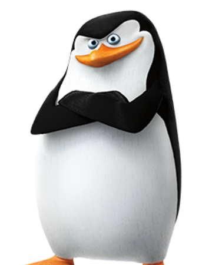

Шки́пер (нидерл. schipper, от schiр — «корабль»; англ. skipper — «капитан», от др.-англ. scip — «корабль»): Шкипер — капитан парусного судна; в России до 1902-го года — капитан торгового судна[1]; в более широком смысле (обычно неофициально либо в историческом контексте) — капитан (командир) любого торгового или рыболовецкого, в том числе несамоходного, судна Шкипер — должностное лицо на военном корабле, отвечающее за корабельное имущество; или же на больших морских торговых судах — лицо, ответственное за палубное имущество[2] Шкипер — пингвин, персонаж мультсериала «Пингвины из Мадагаскара».
комедійний мультсеріал, випущений компанією «DreamWorks Animation» для телеканалу «Nickelodeon». Мультсеріал виходив з 2008 по 2015 роки.